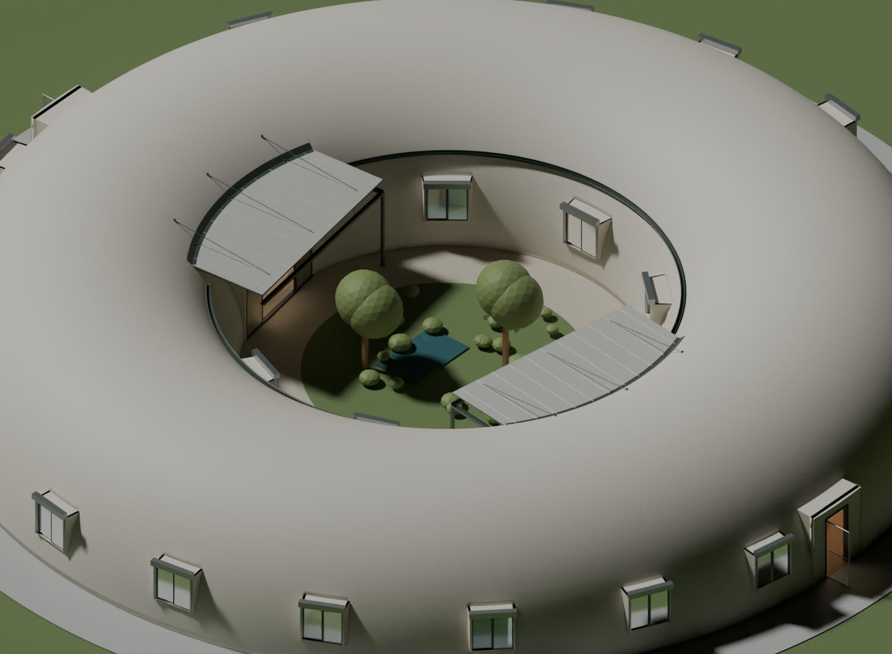

← Walkthrough · Room reference
Dream Home v07 — garden shade and exterior finishes
The current model is Dream Home v07.blend. In the walkthrough, press Esc to adjust the two independent shade controls, then resume exploring.
| Control |
Default |
Includes |
| Door canopies & drains |
ON |
Both new roofs, supports, attachments, flashing, chord gutters, connecting gutters, unshaded courtyard-rim gutters and two downspouts. |
| Ring awning & gutters |
OFF |
The entire original canvas-ring system and both the inner and outer circular gutter systems. |
Visibility and collision change together. A hidden pole, roof or downspout cannot block movement. You can show either option, neither, or both; viewing one at a time is the clearest comparison. A fresh page load restores the defaults.
The new canopy proposal
Two matching, lightweight metal-roof studies shelter the garden approaches to the living room and kitchen. Their straight front edges are parallel to the sliding doors. Their curved backs follow the dome, with a continuous ledger, overlapping apron flashing, shallow underside ribs and three upper tension supports per roof. There are no freestanding support poles across the door approaches.
This concentrates shade where people enter and sit near the doors, while leaving the central garden and the north and south walkway arcs open to the sky. The roofs retain the half-torus shell rather than cutting a new roof profile into it.
| Study dimension |
Living canopy C31 |
Kitchen canopy C32 |
| Room / sliding door |
R28 / D31 |
R27 / D32 |
| Center angle in the plan |
351° |
189° |
| Straight front chord |
22 ft |
22 ft |
| Front chord at its center |
Radius 14 ft, the inner walkway edge |
Radius 14 ft, the inner walkway edge |
| Roof top at front / dome |
10 ft 4 in / 10 ft 10 in |
10 ft 4 in / 10 ft 10 in |
| Dome-to-front projection |
About 10.6 ft at center; 8.0 ft at sides |
About 10.6 ft at center; 8.0 ft at sides |
| Plan area |
About 215 sq ft |
About 215 sq ft |
The back attachment follows approximately 53° of the dome. It is a curved attachment, not a complete semicircular structural arch. The longer-than-six-foot projection accounts for the dome receding above the floor: the roof extends from the raised shell face across the six-foot garden walkway. All roof and support dimensions remain adjustable study choices. The modeled ledger, ribs, rods and attachment plates indicate a support concept; their strength and connection to the monolithic shell have not been engineered.
Drainage
Each roof drops six inches from its dome attachment to its front chord. A suspended, approximately five-inch-wide, four-inch-deep K-style gutter catches runoff along that chord and falls 5½ inches toward the left corner. “Left” means standing inside the associated room and looking out toward the garden.
Two partial circular gutters collect runoff from the unshaded north and south portions of the courtyard rim. Each falls three inches to a canopy’s left side. A connecting side gutter falls another three inches to the same front-left outlet. A 3 × 4-inch rectangular downspout at each left terminal leads to a ground-drain allowance. These thin downspouts occupy the corners of the shaded areas; the center passages remain clear.
The modeled minimum window-surround-to-gutter clearance is 7.43 inches. The conservative clearance from the highest gutter to the lowest roof-support rib is 6.17 inches, excluding the straps intentionally joining gutter and roof. Both exceed the earlier six-inch targets. Downspouts naturally continue below window height beside the shaded approaches.
The new option serves the courtyard rim only. The original five outer-rim gutter segments and five outer downspouts remain in the old assembly, hidden by default. The new option does not claim to provide a complete exterior drainage design.
The curved apron flashing is drawn on the garden-facing surface of the shell, overlapping the roof edge. Positive drainage and integrated flashing at roof/wall junctions follow the general principles described in the Whole Building Design Guide’s moisture-management guidance. The unusual curved connection, gutter capacity, wind-driven runoff across the clearance gap and final underground drainage still need detailed design.
Finding, hiding or removing the assets in Blender
Each alternative has its own top-level collection. The viewport and render switches on that collection control the whole assembly. The old collection is disabled for both by default. Delete a collection and its contents from a saved copy to remove that alternative entirely; no room, window, garden or shell object belongs to either shade collection.
18 Ring awning and gutters - OPTIONAL OFF contains all 248 original assets, preserved with their existing object names:
| Subcollection |
Assets |
Contents / object-name examples |
| 18.01 Canvas and sewn seams |
45 |
20 Sewn six-foot canvas ring segment panels, 20 Canvas radial seam objects, 5 Raised canvas runoff extension above inner gutter panels. |
| 18.02 Metal poles |
5 |
Awning raised metal pole, at the original five north-pointing-pentagon positions. |
| 18.03 Grommets |
120 |
60 Canvas inner grommet and 60 Canvas outer grommet objects. |
| 18.04 Cables and shell anchor rail |
8 |
Inner circular support cable, outer canvas edge cable, raised shell anchor cable and 5 runoff drip-edge cords. |
| 18.05 Attachment ties and eyelets |
50 |
5 pole eyelets, 20 outer-canvas shell ties and 25 runoff-edge suspension ties. The shell attachment remains a cable/rail study. |
| 18.06 Circular gutters and downspouts |
20 |
5 inner gutter segments, 5 outer gutter segments, 5 inner downspouts and 5 outer downspouts. |
21 Door canopies and courtyard drains - ON contains 94 new assets:
| Subcollection |
Assets |
Contents |
| 21.01 Roof panels |
24 |
2 roof panels and 22 narrow roof seams. |
| 21.02 Ribs and edge beams |
20 |
14 tapered soffit ribs and 6 edge members. |
| 21.03 Shell attachments and flashing |
22 |
2 curved ledgers, 2 apron flashings, 6 upper tension supports and 12 connection-plate studies. |
| 21.04 Drainage |
28 |
6 gutters, 12 hanger straps, 2 downspouts, 6 downspout bands and 2 drain-inlet allowances. |
New object names start with C31 for the living-door assembly or C32 for the kitchen-door assembly. Every shade object also has system_option, asset_role and collision properties. The complete, exact object-name inventory is in shade-systems.json. It records collection membership, defaults, dimensions and the downhill gutter paths.
How many exterior tiles and stones?
The existing exterior finishes are two alternative textured shell surfaces. They currently contain zero individually modeled tile or stone pieces. Reconstructing the seeded texture polygons and comparing them with the current shell’s texture mapping gives:
| Count |
P3 Penrose tile study |
Flat-stone study |
| Motifs appearing on the shell mapping |
55,845 |
26,667 |
| Complete motifs within that mapping |
53,024 |
25,826 |
| Motifs clipped by a mapping edge or opening |
2,821 |
841 |
| Motifs intersecting the entire rectangular texture image |
60,330 |
28,618 |
| Total motifs generated, including off-image margins |
62,183 |
28,814 |
The previously recorded 62,183 rhombs counted the entire generated Penrose pattern, including its off-image margin; it was not an installed-tile quantity.
These counts cover the finish-bearing dome mesh, including portions concealed by other objects. They exclude the new plain-metal canopies and do not depend on the current viewing angle. Openings are accounted for through the union of the finish mesh’s mapped faces. Neither image was regenerated or changed for this count.
The Penrose source pattern uses half-foot rhomb edges in a nominal 220 × 55-foot texture rectangle. Projection onto the doubly curved dome changes physical size and shape across the surface. A partially visible motif may need several cut pieces; mortar, fabrication subdivisions, seam matching and waste are not separate pieces in this count. 55,845 and 26,667 are visual design counts, not fabrication or purchasing quantities. The finishes are alternatives and should not be added together.
The reproducible results, method and unchanged image checksums are in finish-counts.json.